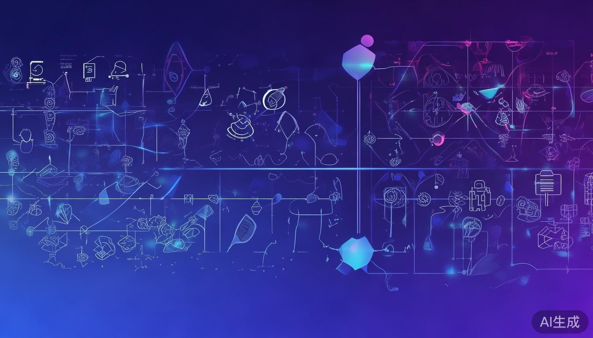

六大类、二十余个真实可用的开源项目，全部附上正确地址与「复制就能跑」的一键命令。 本地免费、数据不出机，多数连显卡都不用 —— 从推理、生成到 Agent 与微调，一条龙配齐。
无需联网、无需 API Key，权重本地跑。轻量用 Ollama 起步，追求吞吐量上 vLLM / SGLang。
一行命令下载并运行本地开源大模型（Llama / Qwen / DeepSeek 蒸馏版等），门槛最低。
ollama run deepseek-r1:7bollama run deepseek-r1:7b，终端即开即聊；Windows/macOS 用官网安装包。纯 C/C++ 大模型推理引擎，GGUF 量化后几乎任何设备（含 CPU、苹果芯片）都能跑。
./llama-cli -m model.gguf -p "你好"。桌面图形应用，点几下就能搜索、下载并运行本地模型，全程无需命令行。
面向生产的高吞吐 LLM 推理服务引擎，兼容 OpenAI API，适合把模型部署成服务。
vllm serve Qwen/Qwen2.5-7B-Instructhttp://localhost:8000，用 OpenAI 兼容接口调用。新一代 LLM / VLM 推理服务框架，吞吐高、支持结构化输出，常用于生产部署。
python -m sglang.launch_server --model Qwen/Qwen2.5-7B-Instructhttp://localhost:30000/v1。
Stable Diffusion 生态三大入口：经典 WebUI、节点式 ComfyUI、专业工作室 InvokeAI，任选其一即可出图。
AUTOMATIC1111 出品的 Stable Diffusion Web 界面，生态最全、教程最多、插件最丰富。
models 目录 启动 浏览器打开 127.0.0.1:7860。节点式图像 / 视频生成引擎，可控性最强，适合搭复杂管线（SD / Flux 等）。
127.0.0.1:8188 拖入工作流 JSON 连好节点 点 Queue。面向专业创作者的文生图工作室，自带画布、图库与统一画布，界面友好。
invokeai-web127.0.0.1:9090 开始作画。Whisper 负责「听懂」，Piper / Bark 负责「说话」，全部离线免费。
OpenAI 开源语音识别模型，多语言转文字 + 翻译，本地离线可用，做字幕神器。
whisper audio.mp3 --language Chinesewhisper 文件.mp3 即可输出带时间轴的转写结果。轻量级本地 TTS，速度快、能跑树莓派，适合离线朗读与嵌入式设备。
echo "你好" | piper --model zh_CN-huayan-medium.onnx --output_file out.wavSuno 开源多语言 TTS，能生成带语气、笑声甚至音乐感的自然语音。
generate_audio 生成语音；CPU 很慢，建议用 GPU。代码框架（LangChain / AutoGen / CrewAI）+ 可视化平台（Dify / n8n），全部无需显卡，走 API 即可。
最流行的 LLM 应用开发框架，把模型、工具、记忆、检索串成链与 Agent。
Prompt + LLM + Tool 构建链，接任意模型 API。微软开源的多智能体对话框架，多个 Agent 自动分工协作完成任务。
AssistantAgent 与 UserProxyAgent，让它们自动对话。以「角色 + 团队」组织多个 AI Agent，像管理一支员工团队一样编排任务。
crewai create crew my_crewAgent + Task + Crew 后调用 kickoff()。开源 LLM 应用平台，可视化搭建 Agent / 工作流 / RAG 知识库，自带管理界面。
http://localhost，配置模型 API 即可建应用。开源工作流自动化平台，可视化串联 AI 与上千个应用，搭自动化流水线。
http://localhost:5678，拖节点连流程，接 AI 节点。模型在本地（Ollama）或云端跑，这些「壳」负责漂亮的对话界面与多用户管理。
功能最全的自托管对话界面，接 Ollama 或 OpenAI 兼容 API，支持 RAG 与多用户。
http://localhost:3000，连上本地 Ollama 即可对话。开源现代设计的多模型对话框架，支持多供应商、插件与视觉，可一键私有部署。
http://localhost:3210，配置模型密钥或接 Ollama。跨平台桌面对话客户端，一键接本地 Ollama 或任意 API，数据本地保存。
从 Transformers 加载预训练模型，用 PEFT/LoRA 低显存微调，再用 DeepSpeed 加速大规模训练。
Hugging Face 最广泛使用的模型库，统一加载、微调、推理数千种预训练模型。
pipeline("sentiment-analysis")("I love AI") 一行跑通推理。高效参数微调库，用 LoRA 只训练极小部分参数，低显存也能微调大模型。
LoraConfig 挂载后微调。微软开源深度学习优化库，分布式训练 / 推理加速，可训练超大模型。
deepspeed train.py --deepspeed ds_config.json 启动训练。